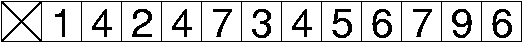
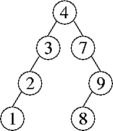
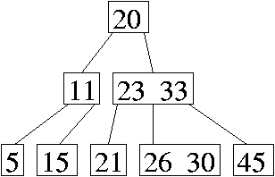

Problem 1. (8 points) A Miscellany.
a. No. Simply setting the head field to null makes the listnodes unreachable, so a mark & sweep garbage collector can reclaim all of them.
b. This hash code does not differentiate between two different cells for which i + j is the same, so moving a chip along a diagonal does not change a board's hash code. Thus, collisions are likely.
c. Use eight hash tables--one for each category. You can tell what category a word is in (if any) simply by checking for its presence in each of the eight hash tables. (Each hash table's size needs to be chosen proportionately to the number of words in each category, so that each table will have the same load factor as one big hash table would. That way, the eight hash tables offer O(1)-time operations and take up the same amount of memory as one big table would.)
d.
Second
Fourth
(Optionally, you can also include an exception message at the end. Since this is just a code fragment, we don't know whether or not the exception is caught somewhere.)
e. Insertion sort and quicksort. (We gave a full point to people who also circled bucket sort, because a bucket sort implementation might inspect the range of the input keys before deciding how many buckets to use.)
f. 8.
Problem 2. (6 points) Operations on Data Structures.
a. 
b. 
c. 
Problem 3. (12 points) Sorting.
a.
5 9 7 4 0 2 8 8
5 8 7 4 0 2 9 8
5 8 7 4 0 2 8 9
0 8 7 4 5 2 8 9
0 2 7 4 5 8 8 9
0 2 4 7 5 8 8 9
0 2 4 5 7 8 8 9
b. All of the keys might go into the first list (e.g. if all the keys are equal). Then this quicksort algorithm will call itself recursively with the same list it started with, and it will repeatedly call itself forever, never terminating.
c. The worst-case running time is in Θ(n2), and the best-case running time is in Θ(n log n).
d. Replace the binary search tree with a splay tree. If the input array is already sorted, then after each insertion, the root has no right child (because the root is the largest key inserted so far). Each time a key is inserted, it becomes the new right child of the root, then it is splayed to the root with a single zig rotation. Thus, each insertion takes O(1) time.
e. If radix sort uses 512 buckets, it inspects 9 bits of each key per pass (as 512 = 29). Java ints are 32 bits long, so radix sort will need to do four passes of bucket sort or counting sort. If radix sort uses 256 buckets, it inspects 8 bits per pass, and still only needs to do four passes. However, sorting with 256 buckets is a bit faster per pass, and takes less memory, whereas there is no advantage to using 512 buckets at all. Therefore, you would never choose 512 buckets over 256 buckets for 32-bit keys.
(It's worth mentioning one misconception we saw on the exams. Some people thought that it's an inherently bad thing if the final pass of radix sort doesn't have 9 bits left to inspect. It's not. Depending on the number of items n you are sorting, it might make a lot of sense to use 2048 = 211 buckets, even though the final pass will only have 10 bits left to inspect. This is the smallest number of buckets that allows you to do just three passes, so it's the right choice for some values of n.)
f. Here are two different correct answers.
g. This problem is known as topological sorting of a directed acyclic graph. The key observation is that we can only output a vertex after all the vertices that point to it have already been written to the output. So assign each vertex two fields: indegree, which records the indegree of the vertex (ignoring self-edges), and prerequisites, which records the number of vertices that point to this vertex and have been written to the output. We can initialize every prerequisites field to zero, and initialize every indegree field by looping through all the edges once. Then we create a list L, which will contain all the vertices for which indegree = prerequisites. Initialize L with all the vertices that have an indegree of zero. Repeat the following step until L is empty: remove a vertex from L, write it to the output, and increment the prerequisites field of every vertex in its adjacency list.
Problem 4. (5 points) Augmented Binary Search Trees.
There are several ways to answer this problem, and the three parts of the solution need to match each other, so here's just one possibility.
a. At each node, store the size of the subtree rooted at that node.
b. Search for the key k (in the usual manner for the find method in a binary search tree). As you walk down the tree, at every node n where you go to n's right child, add the size of the subtree rooted at n's left child to a running total, plus one for n.
When you reach the node that contains k, treat it the same way: add the size of the subtree rooted at that node's left child, plus one for k. Return the sum.
c. First, insert the new key k as usual. If k is already in the tree, do nothing. Otherwise, create a new leaf for k and set its size field to one. Walk back up the tree (or down the tree a second time) and increment the size field of all k's ancestors.
Problem 6. (6 points) Asymptotic Analysis.
a. O(x log y + 4y). (Important note: you cannot replace 22y with 2y. Constants in exponents cannot be tossed out.)
b. We divide the proof into two separate cases: either x ≥ y, or x < y.
In the first case, we have
x2 + 10xy + y2for all values y ≥ 0 and x ≥ y, so x2 + 10xy + y2 ∈ O(x2 + y2) in this case.
≤ x2 + 10x2 + y2
≤ 11 (x2 + y2)
The second case, where x < y, is symmetric.
x2 + 10xy + y2for all values x ≥ 0 and y ≥ x, so x2 + 10xy + y2 ∈ O(x2 + y2) in this case too.
≤ x2 + 10y2 + y2
≤ 11 (x2 + y2)
Problem 6. (6 points) Amortized Analysis.
a. The smallest possible amortized cost of enqueue is $2. For dequeue and multiDequeue, we accepted answers of $0 or $1.
b. This accounting ensures that the following invariant always holds: the number of dollars in the bank is (at least) the number of items in the queue. We can verify that each operation maintains this invariant as follows.
An enqueue operation increases the size of the queue by one item. It costs one actual dollar and puts one dollar in the bank, which is enough to maintain the invariant.
A dequeue operation decreases the size of the queue by one item. Thus, the operation can withdraw one dollar from the bank, which is enough to pay for the operation's actual cost, giving an amortized cost of zero. (Some people charged an amortized cost of $1 to cover the cost of throwing an exception if the queue is empty. We weren't picky about this when grading.)
A multiDequeue operation decreases the size of the queue by either its parameter i or the number of items in the queue, whichever is less. The actual cost of the operation is also the lesser of these two, so the operation withdraws from the bank exactly the number of dollars needed to cover its actual cost. Thus, the amortized cost is zero. (Again, one might charge $1 amortized to cover exceptions on an empty queue.)
By induction on the sequence of operations, all the operations maintain the invariant that the number of dollars in the bank is (at least) as great as the number of items in the queue. Therefore, the bank balance never becomes negative.
c. No, we cannot. If you start with an empty queue and call multiEnqueue(item, i) once, it spends Θ(i) time inserting i copies of item. Since only one operation has taken place since the empty queue was created, its amortized (average) running time is in Θ(i). Since i can be arbitrarily large, the amortized running time is not in O(1).
Problem 7. (7 points) Index Sort.
public static Thing[] indexSort(Thing[] x) { // Returns sorted copy of x.
Thing[] y;
y = new Thing[x.length];
for (int i = 0; i < x.length; i++) {
int index = 0;
for (int j = 0; j < x.length; j++) {
if ((x[j].key < x[i].key) || ((x[j].key == x[i].key) && (j < i))) {
index++;
}
}
y[index] = x[i];
}
return y;
}